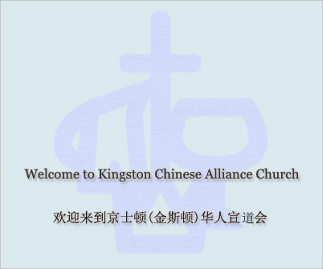

Our new website is under construction
我们新的网站正在建设
中文崇拜 每周日上午11:15 Chinese service Every Sunday 11:15am
英文崇拜 每周日上午9:30 English servie Every Sunday 9:30am
祷告会 Prayer's meeting 每周三晚上7点 Wednesday night 7pm
由于疫情限制我们现在只进行线上活动
Due to covid restrictions we will only be servicing online.
To watch Sunday Service please go to our
YouTube channel (click here)
请到我们的
YouTube 频道(点这里)观看主日崇拜。
To join our prayer meeting please Email us for Zoom link.
参加祷告会请Email我们获得Zoom链接
For information about our Sunday school, Groups, offering, etc, please email us for more information.
主日学、团契、小组、奉献等信息请Email我们获取信息
Contact information 联系我们
Address: 230 MacDonnell St, Kingston, ON K7L 4C2
Phone: (613) 548-7270
YouTube channel:
KCAC Media https://youtube.com/kcacmedia
Emails